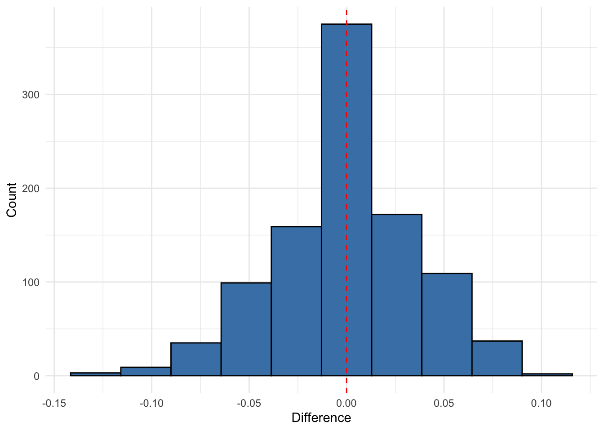

Using the cholostyramine dataset from the bootstrap package
Code
library(bootstrap) # For the cholost datasetlibrary(ggplot2)library(dplyr)library(gridExtra)set.seed(20050724)# Load the cholost datasetdata(cholost)# Confirm dataset structurehead(cholost)
z y
1 0 -5.25
2 27 -1.50
3 71 59.50
4 95 32.50
5 0 -7.25
6 28 23.50
Code
dim(cholost) # Should be 164×2
[1] 164 2
Functions to compute the prediction interval
Code
# Function to calculate OLS prediction intervalcalculate_pred_interval <-function(X, Y, X_new, alpha =0.05) { n <-nrow(X) p <-ncol(X)# Calculate beta hat beta_hat <-solve(t(X) %*% X) %*%t(X) %*% Y# Calculate fitted values Y_hat <- X %*% beta_hat# Calculate sigma hat squared sigma_hat_squared <-sum((Y - Y_hat)^2) / (n - p) sigma_hat <-sqrt(sigma_hat_squared)# Make sure X_new is properly formatted as a row vectorif(is.vector(X_new)) X_new <-matrix(X_new, nrow=1)# Calculate prediction for new observation Y_pred <-as.numeric(X_new %*% beta_hat)# Calculate prediction interval width pred_var <- sigma_hat_squared * (1+as.numeric(X_new %*%solve(t(X) %*% X) %*%t(X_new))) pred_interval_width <-qnorm(1- alpha/2) *sqrt(pred_var)# Return prediction and interval boundsreturn(list(prediction = Y_pred,lower = Y_pred - pred_interval_width,upper = Y_pred + pred_interval_width ))}
Code
# Function for leave-one-out estimate of coverage probabilityloo_coverage_probability <-function(X, Y, alpha =0.05) { n <-nrow(X) covered <-0for (i in1:n) { X_train <- X[-i, , drop =FALSE] Y_train <- Y[-i] X_test <-matrix(X[i, ], nrow =1) Y_test <- Y[i]tryCatch({ pred_interval <-calculate_pred_interval(X_train, Y_train, X_test, alpha)if (Y_test >= pred_interval$lower && Y_test <= pred_interval$upper) { covered <- covered +1 } }, error =function(e) {cat("Error in LOO iteration", i, ":", e$message, "\n") }) }return(covered / n)}
Code
# Prepare the dataset - handling missing values if anycholost_clean <-na.omit(cholost)# Define response and predictorresponse_var <-"y"# The response variablepredictor_var <-"z"# The predictor variable# Repeat the experiment multiple times to get a distribution of resultsn_reps <-1000results <-data.frame(rep =1:n_reps,true_coverage =numeric(n_reps),loo_coverage =numeric(n_reps),diff_squared =numeric(n_reps))for (rep in1:n_reps) {# Randomly split the data into training (50%) and test (50%) sets n_total <-nrow(cholost_clean) train_indices <-sample(1:n_total, size =floor(n_total/2)) train_data <- cholost_clean[train_indices, ] test_data <- cholost_clean[-train_indices, ]# Prepare matrices for training X_train <-as.matrix(train_data[, predictor_var, drop =FALSE]) Y_train <- train_data[[response_var]]# Prepare matrices for testing X_test <-as.matrix(test_data[, predictor_var, drop =FALSE]) Y_test <- test_data[[response_var]]# Calculate true coverage on test set covered <-0 n_test <-nrow(test_data)for (i in1:n_test) {tryCatch({ pred_interval <-calculate_pred_interval(X_train, Y_train, X_test[i, , drop =FALSE], alpha =0.05)if (Y_test[i] >= pred_interval$lower && Y_test[i] <= pred_interval$upper) { covered <- covered +1 } }, error =function(e) {cat("Error in test coverage calculation, iteration", i, ":", e$message, "\n") }) } true_cov <- covered / n_test# Calculate LOO coverage estimate on training set loo_cov <-loo_coverage_probability(X_train, Y_train, alpha =0.05)# Store results results[rep, ] <-c(rep, true_cov, loo_cov, (true_cov - loo_cov)^2)}# Calculate average resultsavg_results <-summarize(results,mean_true_coverage =mean(true_coverage),mean_loo_coverage =mean(loo_coverage),sd_true_coverage =sd(true_coverage),sd_loo_coverage =sd(loo_coverage),mean_squared_diff =mean(diff_squared))# Create visualizationp1 <-ggplot(results, aes(x = loo_coverage, y = true_coverage)) +geom_point(alpha =0.6) +geom_abline(slope =1, intercept =0, linetype ="dashed") +labs(title ="LOO Coverage Estimate vs. True Coverage",subtitle =paste("Cholost Dataset (", n_reps, "random splits)"),x ="Leave-One-Out Coverage Estimate",y ="True Coverage on Test Set") +theme_minimal()# Histogram of differencesresults$difference <- results$true_coverage - results$loo_coveragep2 <-ggplot(results, aes(x = difference)) +geom_histogram(bins =10, fill ="steelblue", color ="black") +geom_vline(xintercept =0, linetype ="dashed", color ="red") +labs(#title = "Distribution of Differences",#subtitle = #"True Coverage - LOO Coverage Estimate",x ="Difference",y ="Count") +theme_minimal()p2

Code
ggsave("histogramdifferences.png",p2,width=6,height=4,bg="white")# Create a scatter plot with the data and prediction intervals# (Using one random training set for visualization)set.seed(44112)train_indices <-sample(1:nrow(cholost_clean), size =floor(nrow(cholost_clean)/2))train_data <- cholost_clean[train_indices, ]test_data <- cholost_clean[-train_indices, ]X_train <-as.matrix(train_data[, predictor_var, drop =FALSE])Y_train <- train_data[[response_var]]# Create a grid of values for z to show the prediction intervalz_grid <-seq(min(cholost_clean$z), max(cholost_clean$z), length.out =100)X_grid <-matrix(z_grid, ncol =1)predictions <-data.frame(z = z_grid, y_pred =NA, lower =NA, upper =NA)for (i in1:length(z_grid)) { pred_interval <-calculate_pred_interval(X_train, Y_train, X_grid[i, , drop =FALSE], alpha =0.05) predictions$y_pred[i] <- pred_interval$prediction predictions$lower[i] <- pred_interval$lower predictions$upper[i] <- pred_interval$upper}p3 <-ggplot() +geom_point(data = train_data, aes(x = z, y = y, color ="Training Data")) +geom_point(data = test_data, aes(x = z, y = y, color ="Test Data")) +geom_line(data = predictions, aes(x = z, y = y_pred), color ="blue") +geom_ribbon(data = predictions, aes(x = z, ymin = lower, ymax = upper), alpha =0.2, fill ="blue") +scale_color_manual(values =c("Training Data"="black", "Test Data"="red")) +labs(title ="Cholost Dataset with Prediction Intervals",subtitle =paste("True Coverage:", round(mean(results$true_coverage), 4), "| LOO Estimate:", round(mean(results$loo_coverage), 4)),x ="Compliance", y ="Improvement", color ="Data Type") +theme_minimal()# Display plots#grid.arrange(p1, p2, p3, ncol = 2, layout_matrix = rbind(c(1,2), c(3,3)))print(p1)
cat("\nStandard Deviation of True Coverage:", round(avg_results$sd_true_coverage, 4))
Standard Deviation of True Coverage: 0.0302
Code
cat("\nStandard Deviation of LOO Coverage:", round(avg_results$sd_loo_coverage, 4))
Standard Deviation of LOO Coverage: 0.0139
Code
# Also fit a standard linear model once to examine the relationshiptrain_lm <-lm(y ~ z, data = train_data)summary(train_lm)
Call:
lm(formula = y ~ z, data = train_data)
Residuals:
Min 1Q Median 3Q Max
-56.387 -12.532 0.995 16.522 39.871
Coefficients:
Estimate Std. Error t value Pr(>|t|)
(Intercept) 0.35902 4.84932 0.074 0.941
z 0.55122 0.07059 7.809 1.91e-11 ***
---
Signif. codes: 0 '***' 0.001 '**' 0.01 '*' 0.05 '.' 0.1 ' ' 1
Residual standard error: 21.38 on 80 degrees of freedom
Multiple R-squared: 0.4326, Adjusted R-squared: 0.4255
F-statistic: 60.98 on 1 and 80 DF, p-value: 1.91e-11
The quadratic version
Code
library(bootstrap) # For the cholost datasetlibrary(ggplot2)library(dplyr)library(gridExtra)set.seed(42)# Load the cholost datasetdata(cholost)# Confirm dataset structurehead(cholost)
z y
1 0 -5.25
2 27 -1.50
3 71 59.50
4 95 32.50
5 0 -7.25
6 28 23.50
Code
dim(cholost) # Should be 164×2
[1] 164 2
Code
# Function to calculate quadratic regression prediction intervalcalculate_quad_pred_interval <-function(X, Y, X_new, alpha =0.05) {# For quadratic regression, we'll add a squared term to the design matrix X_quad <-cbind(X, X^2)colnames(X_quad) <-c("z", "z_squared")# For prediction, also square the new X X_new_quad <-cbind(X_new, X_new^2) n <-nrow(X_quad) p <-ncol(X_quad)# Calculate beta hat beta_hat <-solve(t(X_quad) %*% X_quad) %*%t(X_quad) %*% Y# Calculate fitted values Y_hat <- X_quad %*% beta_hat# Calculate sigma hat squared sigma_hat_squared <-sum((Y - Y_hat)^2) / (n - p) sigma_hat <-sqrt(sigma_hat_squared)# Calculate prediction for new observation Y_pred <-as.numeric(X_new_quad %*% beta_hat)# Calculate prediction interval width pred_var <- sigma_hat_squared * (1+as.numeric(X_new_quad %*%solve(t(X_quad) %*% X_quad) %*%t(X_new_quad))) pred_interval_width <-qnorm(1- alpha/2) *sqrt(pred_var)# Return prediction and interval boundsreturn(list(prediction = Y_pred,lower = Y_pred - pred_interval_width,upper = Y_pred + pred_interval_width ))}# Function for leave-one-out estimate of coverage probability with quadratic regressionloo_coverage_probability <-function(X, Y, alpha =0.05) { n <-nrow(X) covered <-0for (i in1:n) { X_train <- X[-i, , drop =FALSE] Y_train <- Y[-i] X_test <-matrix(X[i, ], nrow =1) Y_test <- Y[i]tryCatch({ pred_interval <-calculate_quad_pred_interval(X_train, Y_train, X_test, alpha)if (Y_test >= pred_interval$lower && Y_test <= pred_interval$upper) { covered <- covered +1 } }, error =function(e) {cat("Error in LOO iteration", i, ":", e$message, "\n") }) }return(covered / n)}# Prepare the dataset - handling missing values if anycholost_clean <-na.omit(cholost)# Define response and predictorresponse_var <-"y"# The response variablepredictor_var <-"z"# The predictor variable# Repeat the experiment multiple times to get a distribution of resultsn_reps <-1000results <-data.frame(rep =1:n_reps,true_coverage =numeric(n_reps),loo_coverage =numeric(n_reps),diff_squared =numeric(n_reps))for (rep in1:n_reps) {# Randomly split the data into training (50%) and test (50%) sets n_total <-nrow(cholost_clean) train_indices <-sample(1:n_total, size =floor(n_total/2)) train_data <- cholost_clean[train_indices, ] test_data <- cholost_clean[-train_indices, ]# Prepare matrices for training X_train <-as.matrix(train_data[, predictor_var, drop =FALSE]) Y_train <- train_data[[response_var]]# Prepare matrices for testing X_test <-as.matrix(test_data[, predictor_var, drop =FALSE]) Y_test <- test_data[[response_var]]# Calculate true coverage on test set covered <-0 n_test <-nrow(test_data)for (i in1:n_test) {tryCatch({ pred_interval <-calculate_quad_pred_interval(X_train, Y_train, X_test[i, , drop =FALSE], alpha =0.05)if (Y_test[i] >= pred_interval$lower && Y_test[i] <= pred_interval$upper) { covered <- covered +1 } }, error =function(e) {cat("Error in test coverage calculation, iteration", i, ":", e$message, "\n") }) } true_cov <- covered / n_test# Calculate LOO coverage estimate on training set loo_cov <-loo_coverage_probability(X_train, Y_train, alpha =0.05)# Store results results[rep, ] <-c(rep, true_cov, loo_cov, (true_cov - loo_cov)^2)}# Calculate average resultsavg_results <-summarize(results,mean_true_coverage =mean(true_coverage),mean_loo_coverage =mean(loo_coverage),sd_true_coverage =sd(true_coverage),sd_loo_coverage =sd(loo_coverage),mean_squared_diff =mean(diff_squared))# Create visualizationp1 <-ggplot(results, aes(x = loo_coverage, y = true_coverage)) +geom_point(alpha =0.6) +geom_abline(slope =1, intercept =0, linetype ="dashed") +labs(title ="LOO Coverage Estimate vs. True Coverage",subtitle =paste("Cholost Dataset - Quadratic Model (", n_reps, "random splits)"),x ="Leave-One-Out Coverage Estimate",y ="True Coverage on Test Set") +theme_minimal()# Histogram of differencesresults$difference <- results$true_coverage - results$loo_coveragep2 <-ggplot(results, aes(x = difference)) +geom_histogram(bins =10, fill ="steelblue", color ="black") +geom_vline(xintercept =0, linetype ="dashed", color ="red") +labs(title ="Distribution of Differences",subtitle ="True Coverage - LOO Coverage Estimate",x ="Difference",y ="Count") +theme_minimal()# Create a scatter plot with the data and prediction intervals# (Using one random training set for visualization)set.seed(123)train_indices <-sample(1:nrow(cholost_clean), size =floor(nrow(cholost_clean)/2))train_data <- cholost_clean[train_indices, ]test_data <- cholost_clean[-train_indices, ]X_train <-as.matrix(train_data[, predictor_var, drop =FALSE])Y_train <- train_data[[response_var]]# Create a grid of values for z to show the prediction intervalz_grid <-seq(min(cholost_clean$z), max(cholost_clean$z), length.out =100)X_grid <-matrix(z_grid, ncol =1)predictions <-data.frame(z = z_grid, y_pred =NA, lower =NA, upper =NA)for (i in1:length(z_grid)) { pred_interval <-calculate_quad_pred_interval(X_train, Y_train, X_grid[i, , drop =FALSE], alpha =0.05) predictions$y_pred[i] <- pred_interval$prediction predictions$lower[i] <- pred_interval$lower predictions$upper[i] <- pred_interval$upper}p3 <-ggplot() +geom_point(data = train_data, aes(x = z, y = y, color ="Training Data")) +geom_point(data = test_data, aes(x = z, y = y, color ="Test Data")) +geom_line(data = predictions, aes(x = z, y = y_pred), color ="blue") +geom_ribbon(data = predictions, aes(x = z, ymin = lower, ymax = upper), alpha =0.2, fill ="blue") +scale_color_manual(values =c("Training Data"="black", "Test Data"="red")) +labs(title ="Cholost Dataset with Quadratic Prediction Intervals",subtitle =paste("True Coverage:", round(mean(results$true_coverage), 4), "| LOO Estimate:", round(mean(results$loo_coverage), 4)),x ="Compliance", y ="Improvement", color ="Data Type") +theme_minimal()# Display plots#grid.arrange(p1, p2, p3, ncol = 2, layout_matrix = rbind(c(1,2), c(3,3)))print(p1)